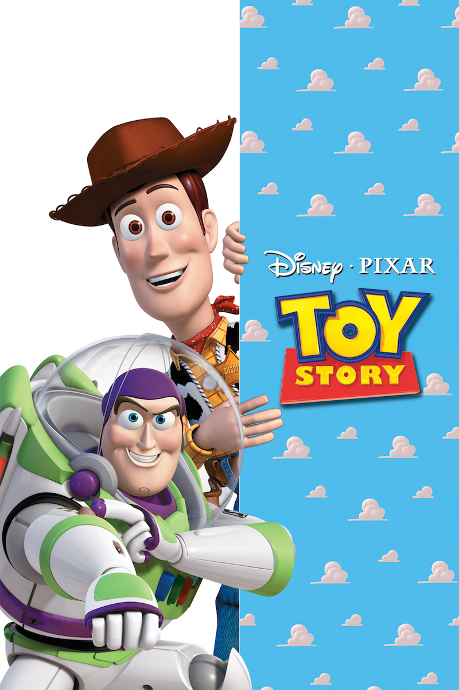
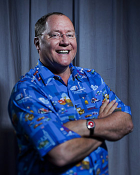
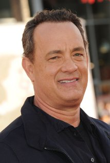

Summary
A little boy named Andy loves to be in his room, playing with his toys, especially his doll named "Woody". But, what do the toys do when Andy is not with them, they come to life. Woody believes that he has life (as a toy) good. However, he must worry about Andy's family moving, and what Woody does not know is about Andy's birthday party. Woody does not realize that Andy's mother gave him an action figure known as Buzz Lightyear, who does not believe that he is a toy, and quickly becomes Andy's new favorite toy. Woody, who is now consumed with jealousy, tries to get rid of Buzz. Then, both Woody and Buzz are now lost. They must find a way to get back to Andy before he moves without them, but they will have to pass through a ruthless toy killer, Sid Phillips.
Cast
- Tom Hanks
- Tim Allen
- Don Rickles
- Jim Varney
- Wallace Shawn
Director
John Lasseter was born on January 12, 1957 in Hollywood, Los Angeles, California, USA as John Alan Lasseter. He is a producer and director, known for Toy Story (1995), Cars (2006) and Toy Story 2 (1999). He is married to Nancy Lasseter. They have five children.
Lead Actor
Thomas Jeffrey Hanks was born in Concord, California, to Janet Marylyn (Frager), a hospital worker, and Amos Mefford Hanks, an itinerant cook. His father had English, and some German, ancestry, while his mother's family, originally surnamed "Fraga", was entirely Portuguese. Tom grew up in what he has called a "fractured" family. He moved around a lot after his parents' divorce, living with a succession of step-families. No problems, no abuse, no alcoholism - just a confused childhood. He had no acting experience in college and, in fact, credits the fact that he couldn't get cast in a college play with actually starting his career. He went downtown, auditioned for a community theater play, was invited by the director of that play to go to Cleveland, and there his acting career started. He met his second wife, actress Rita Wilson on the set of his television show Bosom Buddies (1980) - she appeared in one episode in the second season (1981), Bosom Buddies: All You Need Is Love (1981). They have two children, and Tom has another son and daughter by his first wife, Samantha Lewes. In 1996, he made his first step behind the camera, directing and writing as well as starring in the film, That Thing You Do! (1996).